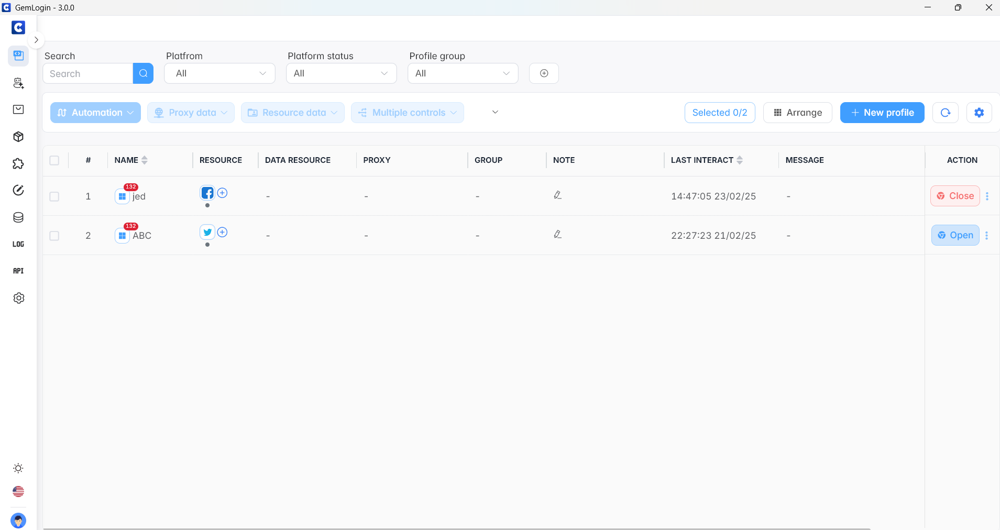

แนะนำตัว
ชื่อนาย เจษฎา มาตเรียง (เจษ)
ได้มาทดลองงานที่บริษัทคอนเท็นต์ วันที่ทดลองงาน 3วัน วันที่ 21-23 กุมภาพันธ์ พศ.2568
วันนี้ 1
- Antidetect Browser คืออะไร
- Gemlogin — ทางเลือกใหม่ในการจัดการบัญชีออนไลน์หลายโปรไฟล์ อย่างปลอดภัยและมีประสิทธิภาพ
- Proxy + Automation: เครื่องมือลับที่ช่วยให้บอททำงานเร็วและปลอดภัยขึ้น!
- การมีบัญชีโซเชียลมีเดียหลายบัญชีคืออะไร แล้วทำไมถึงต้องมีหลายบัญชี
- วิธีการหลีกเลี่ยงการบล็อกที่อยู่ IP อย่างปลอดภัย
ในวันที่1 พี่ใบตองได้หัวข้อต่างๆในการปรับพื้นฐาน
ในการปรับพื้นฐานมีหัวข้อดังต่อไปนี้
วันนี้ 2
- IP Address คืออะไร
- Proxy มันมี IPv4 กับ IPv6 มันต่างกันยังไง เวลาใช้เราต้องใช้อันไหน
- User-Agent
ในวันที่2 ได้ทดลองใช้ Gemlogin และได้เรียนรู้เพิ่มเติมจากวันที่1
โปรแกรมGemlogin
Gemlogin เป็นเบราว์เซอร์ที่ออกแบบมาเพื่อช่วยจัดการหลายบัญชีออนไลน์อย่างปลอดภัยและมีประสิทธิภาพ โดยเฉพาะสำหรับผู้ที่ต้องการบริหารหลายโปรไฟล์บนแพลตฟอร์มโซเชียลมีเดีย เช่น Facebook, Instagram, YouTube และ Twitter
การทำงานของ Gemlogin:
โปรไฟล์แยกอิสระ : Gemlogin ช่วยสร้างโปรไฟล์เบราว์เซอร์ที่แยกจากกัน ทำให้แต่ละบัญชีมีข้อมูลและการตั้งค่าของตนเอง ลดความเสี่ยงจากการถูกตรวจจับหรือแบน
ระบบอัตโนมัติ (Automation) : ผู้ใช้สามารถตั้งค่ากระบวนการทำงานอัตโนมัติ เช่น การล็อกอิน การโพสต์ หรือการสลับโปรไฟล์ โดยไม่จำเป็นต้องมีความรู้ด้านการเขียนโปรแกรม
ป้องกันการตรวจจับ (Antidetect) : ด้วยฟังก์ชัน Antidetect Browser Gemlogin ช่วยปกปิดตัวตนออนไลน์ โดยการสร้างลายนิ้วมือดิจิทัลที่แตกต่างกันสำหรับแต่ละโปรไฟล์ และรองรับการใช้ Proxy เพื่อเปลี่ยน IP Address ทำให้แพลตฟอร์มต่าง ๆ ไม่สามารถเชื่อมโยงบัญชีเข้าด้วยกันได้
สำหรับข้อมูลเพิ่มเติมเกี่ยวกับการใช้งาน Gemlogin ในการทำ SEO สามารถชมวิดีโอนี้
ทำความเข้าใจหลักการทำงานของ SEO
SEO คือ Search Engince Optimize เป็นการทำให้เว็ปไซด์ของเราติดอันดับการค้นหาของกูเกิ้ล เมื่อมีคนค้นหา คำค้นหา ( คีย์เวิร์ด ) ใดๆ ที่กลุ่มเป้าหมายสนใจการทำให้เว็ปไซด์ ติดอันดับคำค้นหานั้น มีกรรมวิธี ที่แตกต่างกันตามหลักเงื่อนไขการทำงานของ Google ที่ปรับเปลี่ยนตลอดเวลา แต่สิ่งหนึ่งที่สามารถทำได้ คือการสร้าง ปริมาณ การเข้าชมเว็บไซต์ หรือการค้นหาแล้วเข้าเว็ป นอกจากนี้ยังมีเรื่องคุณภาพเว็ปไซด์ คุณภาพเนื้อหา รวมไปถึง Referrence Link หรือ Back Link
เป้าหมายของการทำ SEO
1.เพิ่มการมองเห็น: ช่วยให้เว็บไซต์ติดอันดับสูงในผลการค้นหาของ Google หรือเครื่องมือค้นหาอื่น ๆ
2.เพิ่มปริมาณการเข้าชม: ทำให้ผู้ใช้เข้าชมเว็บไซต์มากขึ้นโดยไม่ต้องใช้โฆษณา
3.เพิ่มความน่าเชื่อถือ: เว็บไซต์ที่ติดอันดับสูงมักถูกมองว่ามีความน่าเชื่อถือ
4.เพิ่มยอดขาย/สมาชิก: การเข้าชมมากขึ้นหมายถึงโอกาสในการขายหรือสมัครสมาชิกที่สูงขึ้น
5.ลดค่าใช้จ่ายโฆษณา: เมื่อเว็บไซต์ติดอันดับแล้ว การเข้าชมฟรีไม่ต้องจ่ายค่าโฆษณาเพิ่ม
การที่เว็บไซต์ของคุณทำ SEO จนติดอันดับสูงในผลการค้นหาหมายความว่า เมื่อผู้ใช้ค้นหาด้วยคำหรือคีย์เวิร์ดที่เกี่ยวข้อง

วิดีโอที่ได้ทดลองทำ
จะมาอธิบาย scriptที่ทดลอง และเพิ่มเติมในแต่ละscript แต่ละตัวคืออะไร และการใช้งานเป็นอย่างไร มีดังนี้:
- Start :เริ่มต้นการทำงานของสคริปต์
- Open URL :เปิดเว็บไซต์ที่ต้องการ เช่น ในวิดีโอได้ทำการเปิดเว็บไซต์ซื้อขายNotebook
- Mouse Click : คลิกเมาส์บนองค์ประกอบที่กำหนด เช่น ในวิดีโอได้ทำการคลิกหน้าถัดไป
- Element Exists :ตรวจสอบว่าองค์ประกอบที่ต้องการมีอยู่บนหน้าเว็บหรือไม่ เช่น ในวิดีโอได้เลือก Apple MacBook Pro 16-MX313TH ถ้าเกินหน้านี้ไม่มีก็กลับไปกดคลิกหน้าถัดไป
- Mouse Click :ถ้าเจอ Apple MacBook Pro 16-MX313TH แล้วคลิกเข้าไปในหน้าสินค้า
วิธีสร้าง profile
ก่อนที่จะมาทำการสร้างprofileเรามาทำการรู้จักกันก่อนว่าprofile คืออะไร
Profile ใน GemLogin คือ เบราว์เซอร์จำลองที่แยกออกจากกัน ซึ่งช่วยให้คุณสามารถ จัดการบัญชีหลายบัญชี บนแพลตฟอร์มต่างๆ ได้โดยไม่ถูกตรวจจับว่าเป็นบัญชีเดียวกัน
คุณสมบัติของ Profile ใน GemLogin
✅ แยกข้อมูลกัน 100%
✅ ป้องกันการตรวจจับจากแพลตฟอร์ม (Anti-Detect)
✅ รองรับ Proxy (IP แยกกัน)
✅ เหมาะสำหรับการจัดการหลายบัญชี (Multi-Account Management)
หน้า Profile ใน GemLogin
องค์ประกอบของหน้า
แถบค้นหา & ตัวกรอง
ปุ่มคำสั่งด้านบน
ตารางรายชื่อโปรไฟล์
New Fingerprint

องค์ประกอบของหน้า
แถบการสร้างโปรไฟล์ (ด้านบน)
ฟอร์มสร้างโปรไฟล์ (กลางจอ)
การตั้งค่าระบบปฏิบัติการ & เบราว์เซอร์
การตั้งค่าประเทศ
ปุ่ม "New Fingerprint" ใช้สร้างลายนิ้วมือเบราว์เซอร์ใหม่ เพื่อให้โปรไฟล์ไม่ถูกตรวจจับว่าเป็นบัญชีเดียวกัน